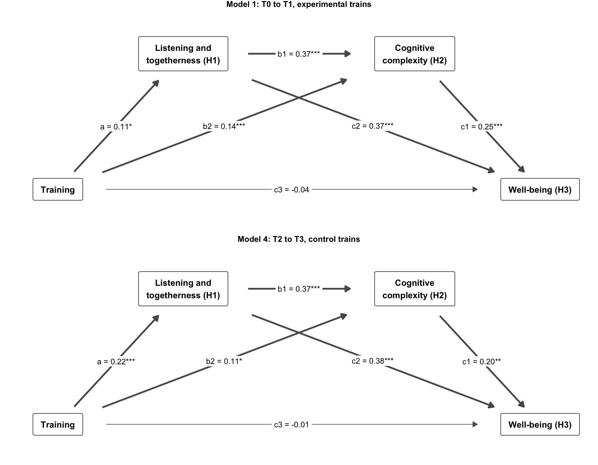

source("R/packages.R") # all packages (Chapter 1)
source("R/settings.R") # waves, conditions, folders (Chapter 1)
df <- readRDS("cache/df.rds") # one row per questionnaire (Chapter 2)
df_wide <- readRDS("cache/df_wide.rds") # one row per person (Chapter 2)
item_names <- names(select(df, ListenOther1:CompetenceNonFrustrated4))
source("R/scales.R") # the 23 scales (Chapter 2)12. Serial mediation
NoteAbout this chapter
Tests the preregistered pathway of the training: training → listening and togetherness (H1) → cognitive complexity (H2) → well-being (H3), in four windows between two waves. Indirect effects carry bootstrap confidence intervals; cluster-robust and complete-case fits check them, and a model with latent blocks (structural after measurement) asks whether they hold when measurement error is modelled. Feeds the mediation results of the paper.
12.1 The model
How does the training reach well-being? In each window, the composite scores at the end of the window are regressed in sequence: H1 on training, H2 on H1 and training, H3 on H2, H1 and training. All three regressions control for the three composites at the start of the window. The indirect effect on H3 splits into three paths: through H1 alone, through H2 alone, and through H1 and H2 in series. Within a wave, H1, H2 and H3 are measured at the same time; their order inside the wave is a theoretical assumption, not a feature of the design.
# Serial mediation (Chapter 12): training -> listening and togetherness (H1)
# -> cognitive complexity (H2) -> well-being (H3) in one window, controlling
# for the three composites at the start of the window
# the four windows and the group that trains in each
mediation_windows <- tribble(
~model, ~pre, ~post, ~treated, ~reading,
1, "T0", "T1", "train_eg", "the experimental group trains",
2, "T0", "T2", "train_eg", "durability from baseline",
3, "T1", "T2", "train_eg", "maintenance, no new training",
4, "T2", "T3", "train_cg", "the control group trains (replication)"
)
# the wide names of the composites at a wave: T1_Hypothesis2_... and so on
composite_at <- \(wave) {
str_c(wave, "_", c("Hypothesis1_ListeningTogetherness",
"Hypothesis2_CognitiveComplexity",
"Hypothesis3_Wellbeing"))
}
mediation_model <- \(pre, post, treated) {
before <- composite_at(pre)
after <- composite_at(post)
controls <- str_c(before, collapse = " + ")
c(
# paths: a (training -> H1), b1 and b2 (-> H2), c1 to c3 (-> H3)
str_c(after[1], " ~ A*", treated, " + ", controls),
str_c(after[2], " ~ B1*", after[1], " + B2*", treated, " + ", controls),
str_c(after[3], " ~ C1*", after[2], " + C2*", after[1], " + C3*",
treated, " + ", controls),
# the controls covary
str_c(before[1], " ~~ ", before[2]),
str_c(before[1], " ~~ ", before[3]),
str_c(before[2], " ~~ ", before[3]),
# effects on H2
"indirectH2 := A*B1",
"directH2 := B2",
"totalH2 := B2 + A*B1",
# effects on H3: via H1, via H2, via both in series
"ind_LET := A*C2",
"ind_CF := B2*C1",
"ind_serial := A*B1*C1",
"total_indirect := A*C2 + B2*C1 + A*B1*C1",
"directH3 := C3",
"totalH3 := C3 + A*C2 + B2*C1 + A*B1*C1"
) |>
str_c(collapse = "\n")
}
# maximum likelihood with 1,000 bootstrap draws (seed as before); missing
# values by full information ("fiml") or complete cases ("listwise")
fit_mediation <- \(model, data, missing = "fiml") {
set.seed(20260525)
sem(model, data = data, estimator = "ML", se = "bootstrap",
bootstrap = 1000, missing = missing)
}Model 1 in full:
mediation_model("T0", "T1", "train_eg") |> cat("\n")T1_Hypothesis1_ListeningTogetherness ~ A*train_eg + T0_Hypothesis1_ListeningTogetherness + T0_Hypothesis2_CognitiveComplexity + T0_Hypothesis3_Wellbeing
T1_Hypothesis2_CognitiveComplexity ~ B1*T1_Hypothesis1_ListeningTogetherness + B2*train_eg + T0_Hypothesis1_ListeningTogetherness + T0_Hypothesis2_CognitiveComplexity + T0_Hypothesis3_Wellbeing
T1_Hypothesis3_Wellbeing ~ C1*T1_Hypothesis2_CognitiveComplexity + C2*T1_Hypothesis1_ListeningTogetherness + C3*train_eg + T0_Hypothesis1_ListeningTogetherness + T0_Hypothesis2_CognitiveComplexity + T0_Hypothesis3_Wellbeing
T0_Hypothesis1_ListeningTogetherness ~~ T0_Hypothesis2_CognitiveComplexity
T0_Hypothesis1_ListeningTogetherness ~~ T0_Hypothesis3_Wellbeing
T0_Hypothesis2_CognitiveComplexity ~~ T0_Hypothesis3_Wellbeing
indirectH2 := A*B1
directH2 := B2
totalH2 := B2 + A*B1
ind_LET := A*C2
ind_CF := B2*C1
ind_serial := A*B1*C1
total_indirect := A*C2 + B2*C1 + A*B1*C1
directH3 := C3
totalH3 := C3 + A*C2 + B2*C1 + A*B1*C1 The four windows: the experimental group trains (Model 1), durability from baseline (Model 2), maintenance without new training (Model 3, which controls for a state already after the training and is read with care), and the replication while the control group trains (Model 4, with train_cg):
mediation_windows| model | pre | post | treated | reading |
|---|---|---|---|---|
| 1 | T0 | T1 | train_eg | the experimental group trains |
| 2 | T0 | T2 | train_eg | durability from baseline |
| 3 | T1 | T2 | train_eg | maintenance, no new training |
| 4 | T2 | T3 | train_cg | the control group trains (replication) |
12.2 Estimation
How are the models fitted? By maximum likelihood with 1,000 bootstrap draws, once with full information (FIML, all persons) and once with complete cases only. The bootstraps take a few minutes and run in a script of their own; this chapter reads its results.
# Serial mediation: the bootstrapped fits of Chapter 12, four windows, full
# information and complete cases, 1,000 draws each (about 6 minutes)
# Run from swt-website/ after Chapter 2: Rscript scripts/mediation_bootstrap.R
source("R/packages.R")
source("R/settings.R")
source("R/mediation_model.R")
df_wide <- readRDS("cache/df_wide.rds") # one row per person (Chapter 2)
mediation <- mediation_windows |>
mutate(syntax = pmap_chr(list(pre, post, treated), mediation_model),
fiml = map(syntax, \(m) fit_mediation(m, df_wide)),
listwise = map(syntax, \(m) fit_mediation(m, df_wide, "listwise")))
saveRDS(mediation, "cache/mediation_bootstrap.rds")mediation <- readRDS("cache/mediation_bootstrap.rds")The FIML fits include all 451 persons; those without any answer in a window carry no information on it and leave the estimates unchanged.
How many persons carry each window? Those with at least one of the six composites of the window, who inform the FIML estimates, and those with all six, on whom the complete-case fits rest:
persons <- mediation |>
mutate(variables = map2(pre, post, \(a, b)
c(composite_at(a), composite_at(b))),
fiml = map_int(fiml, \(f) lavInspect(f, "nobs")),
answering = map_int(variables, \(v)
sum(rowSums(!is.na(df_wide[v])) > 0)),
complete = map_int(listwise, \(f) lavInspect(f, "nobs"))) |>
select(model, pre, post, fiml, answering, complete)
persons| model | pre | post | fiml | answering | complete |
|---|---|---|---|---|---|
| 1 | T0 | T1 | 451 | 378 | 282 |
| 2 | T0 | T2 | 451 | 429 | 198 |
| 3 | T1 | T2 | 451 | 382 | 189 |
| 4 | T2 | T3 | 451 | 304 | 176 |
The windows draw on 304 (Model 4) to 429 (Model 2) persons with answers; 378 answered at T0 or T1, the window of Model 1. The complete-case fits keep 176 to 282 of them (282 in Model 1).
The third estimator clusters the standard errors by municipality, where the training was assigned. It cannot be combined with the bootstrap and is fast, so it runs here:
mediation <- mediation |>
mutate(cluster = map(syntax, \(m)
sem(m, data = df_wide, estimator = "ML", se = "robust.huber.white",
cluster = "Municipality", missing = "fiml", fixed.x = FALSE)))Could the municipalities get a model of their own? A multigroup model, one group per municipality, would let the paths differ between municipalities, and a multigroup SAM (12.5) would add the control of measurement error. Its groups would be small:
municipality_groups <- df_wide |>
count(Municipality, name = "persons") |>
summarise(municipalities = n(), smallest = min(persons),
largest = max(persons),
parameters_per_group = lavInspect(mediation$fiml[[1]], "npar"),
parameters_in_all = municipalities * parameters_per_group)
municipality_groups| municipalities | smallest | largest | parameters_per_group | parameters_in_all |
|---|---|---|---|---|
| 20 | 12 | 45 | 30 | 600 |
The 20 municipalities hold 12 to 45 persons each, and only some of them answered in a given window. Model 1 alone has 30 free parameters; one model per municipality would need 600 for 451 persons, before any measurement model is added. Such a model is not estimable, so the municipalities enter through the cluster-robust standard errors; how much of the variance lies between them shows the multilevel model (Chapter 10).
12.3 Effects in each window
Which effects carry? Indirect, direct and total effects, unstandardized, with bias-corrected bootstrap intervals (FIML) and the p-value of a z-test on the bootstrap standard error:
effect_labels <- c(
indirectH2 = "H2: indirect via H1 (a × b1)",
directH2 = "H2: direct (b2)",
totalH2 = "H2: total",
ind_LET = "H3: indirect via H1 (a × c2)",
ind_CF = "H3: indirect via H2 (b2 × c1)",
ind_serial = "H3: serial via H1 and H2 (a × b1 × c1)",
total_indirect = "H3: total indirect",
directH3 = "H3: direct (c3)",
totalH3 = "H3: total"
)
defined_effects <- \(fit) {
parameterEstimates(fit, boot.ci.type = "bca.simple") |>
filter(op == ":=") |>
transmute(effect = label, est, ci_low = ci.lower, ci_high = ci.upper,
p = pvalue)
}
mediation_effects <- mediation |>
mutate(effects = map(fiml, defined_effects)) |>
select(model, reading, effects) |>
unnest(effects) |>
mutate(effect = factor(effect_labels[effect], levels = effect_labels))
mediation_effects |>
mutate(estimate = sprintf("%.3f [%.3f, %.3f]", est, ci_low, ci_high),
p = round(p, 3)) |>
select(model, effect, estimate, p) |>
pivot_wider(names_from = model, values_from = c(estimate, p),
names_glue = "model{model}_{.value}") |>
arrange(effect)| effect | model1_estimate | model2_estimate | model3_estimate | model4_estimate | model1_p | model2_p | model3_p | model4_p |
|---|---|---|---|---|---|---|---|---|
| H2: indirect via H1 (a × b1) | 0.066 [0.005, 0.133] | 0.084 [-0.006, 0.182] | 0.033 [-0.049, 0.128] | 0.127 [0.055, 0.219] | 0.044 | 0.065 | 0.440 | 0.001 |
| H2: direct (b2) | 0.244 [0.120, 0.378] | -0.079 [-0.252, 0.069] | -0.166 [-0.327, -0.024] | 0.179 [0.006, 0.345] | 0.000 | 0.329 | 0.038 | 0.037 |
| H2: total | 0.310 [0.162, 0.459] | 0.005 [-0.194, 0.171] | -0.133 [-0.317, 0.050] | 0.306 [0.132, 0.474] | 0.000 | 0.957 | 0.148 | 0.001 |
| H3: indirect via H1 (a × c2) | 0.084 [0.007, 0.155] | 0.066 [-0.002, 0.166] | 0.039 [-0.051, 0.149] | 0.158 [0.078, 0.265] | 0.024 | 0.108 | 0.439 | 0.001 |
| H3: indirect via H2 (b2 × c1) | 0.077 [0.040, 0.137] | -0.029 [-0.111, 0.024] | -0.034 [-0.096, -0.005] | 0.043 [0.006, 0.110] | 0.001 | 0.367 | 0.121 | 0.081 |
| H3: serial via H1 and H2 (a × b1 × c1) | 0.021 [0.003, 0.051] | 0.031 [0.001, 0.082] | 0.007 [-0.007, 0.038] | 0.030 [0.009, 0.067] | 0.078 | 0.108 | 0.502 | 0.032 |
| H3: total indirect | 0.182 [0.083, 0.295] | 0.068 [-0.058, 0.203] | 0.013 [-0.104, 0.140] | 0.232 [0.127, 0.354] | 0.001 | 0.294 | 0.844 | 0.000 |
| H3: direct (c3) | -0.082 [-0.243, 0.060] | -0.006 [-0.172, 0.175] | 0.008 [-0.156, 0.182] | -0.017 [-0.182, 0.166] | 0.290 | 0.944 | 0.924 | 0.847 |
| H3: total | 0.100 [-0.081, 0.275] | 0.061 [-0.166, 0.265] | 0.021 [-0.174, 0.260] | 0.215 [0.024, 0.408] | 0.273 | 0.573 | 0.845 | 0.025 |
Which test decides for an indirect effect? The z-test assumes that an estimate is normally distributed across samples. An indirect effect is a product of paths, and the distribution of a product is skewed, so the bootstrap interval, which follows the skew, is the standard test for indirect effects (MacKinnon et al., 2004; Preacher & Hayes, 2008). This chapter judges every indirect effect by its bias-corrected interval. The effects on which the two tests disagree:
mediation_effects |>
filter((ci_low > 0 | ci_high < 0) != (p < .05)) |>
mutate(across(c(est, ci_low, ci_high), \(x) round(x, 3)),
p = round(p, 3)) |>
select(model, effect, est, ci_low, ci_high, p)| model | effect | est | ci_low | ci_high | p |
|---|---|---|---|---|---|
| 1 | H3: serial via H1 and H2 (a × b1 × c1) | 0.021 | 0.003 | 0.051 | 0.078 |
| 2 | H3: serial via H1 and H2 (a × b1 × c1) | 0.031 | 0.001 | 0.082 | 0.108 |
| 3 | H3: indirect via H2 (b2 × c1) | -0.034 | -0.096 | -0.005 | 0.121 |
| 4 | H3: indirect via H2 (b2 × c1) | 0.043 | 0.006 | 0.110 | 0.081 |
# the bootstrap draws of the serial path of Model 1
serial_draws <- lavInspect(mediation$fiml[[1]], "boot") |>
as_tibble() |>
transmute(serial = A * B1 * C1)
serial_draws |>
summarise(draws = n(), at_or_below_0 = mean(serial <= 0),
skewness = psych::skew(serial)) |>
mutate(across(where(is.double), \(x) round(x, 3)))| draws | at_or_below_0 | skewness |
|---|---|---|
| 1000 | 0.02 | 0.639 |
In 4 single paths the interval excludes 0 while the z-test does not reach p < .05. One is the serial path of Model 1 (p = .078): its 1000 bootstrap draws are skewed to the right (skewness 0.64), and only 2.0 % of them lie at or below 0. The interval follows this shape, the z-test does not. By the interval, the serial path is significant in Model 1. For the total indirect effects the two tests agree in every window.
While the experimental group trains (Model 1), the total indirect effect on well-being is 0.18 [0.08, 0.30], and the serial path through H1 and H2 is 0.021 [0.003, 0.051]. The direct path is small, negative and not significant (-0.08), and so is the total effect of the training on well-being (0.10 [-0.08, 0.27], p = .273). This is an indirect-only mediation (Zhao et al., 2010): the path from the training through listening and togetherness and cognitive complexity to well-being carries, but in this window the training does not change well-being significantly in total. The results therefore show an indirect effect, not an effect on well-being that runs entirely through the mediators. While the control group trains (Model 4), the indirect effects repeat (total indirect 0.23, serial 0.030, both intervals excluding 0), the direct path is again not significant, and here the total effect is (0.21, p = .025). Between the trainings (Models 2 and 3), the total indirect effects are small and their intervals include 0 (0.07 and 0.01); two single paths exclude 0 by a narrow margin, the serial path of Model 2 (0.031) and the path through H2 of Model 3, which runs against the training (-0.034). The mediating process runs within the training windows.
12.4 Three estimators
Do the results depend on the estimator? Standardized paths and effects with their p-values, for FIML (bootstrap), cluster-robust standard errors and complete cases (bootstrap):
path_labels <- c(A = "a: training -> H1", B1 = "b1: H1 -> H2",
B2 = "b2: training -> H2", C1 = "c1: H2 -> H3",
C2 = "c2: H1 -> H3", C3 = "c3: training -> H3",
effect_labels)
standardized <- \(fit) {
standardizedSolution(fit) |>
filter(label %in% names(path_labels)) |>
distinct(label, .keep_all = TRUE) |>
transmute(label, beta = est.std, p = pvalue)
}
estimators <- mediation |>
select(model, fiml, cluster, listwise) |>
pivot_longer(-model, names_to = "estimator", values_to = "fit") |>
mutate(estimates = map(fit, standardized)) |>
select(model, estimator, estimates) |>
unnest(estimates) |>
mutate(path = factor(path_labels[label], levels = path_labels))
estimators |>
mutate(across(c(beta, p), \(x) round(x, 3))) |>
select(model, path, estimator, beta, p) |>
pivot_wider(names_from = estimator, values_from = c(beta, p),
names_glue = "{estimator}_{.value}") |>
arrange(model, path)| model | path | fiml_beta | cluster_beta | listwise_beta | fiml_p | cluster_p | listwise_p |
|---|---|---|---|---|---|---|---|
| 1 | a: training -> H1 | 0.105 | 0.105 | 0.106 | 0.033 | 0.033 | 0.030 |
| 1 | b1: H1 -> H2 | 0.365 | 0.365 | 0.370 | 0.000 | 0.000 | 0.000 |
| 1 | b2: training -> H2 | 0.142 | 0.142 | 0.140 | 0.000 | 0.001 | 0.001 |
| 1 | c1: H2 -> H3 | 0.250 | 0.250 | 0.250 | 0.000 | 0.000 | 0.000 |
| 1 | c2: H1 -> H3 | 0.366 | 0.366 | 0.381 | 0.000 | 0.000 | 0.000 |
| 1 | c3: training -> H3 | -0.038 | -0.038 | -0.031 | 0.291 | 0.180 | 0.397 |
| 1 | H2: indirect via H1 (a × b1) | 0.038 | 0.038 | 0.039 | 0.039 | 0.037 | 0.039 |
| 1 | H2: direct (b2) | 0.142 | 0.142 | 0.140 | 0.000 | 0.001 | 0.001 |
| 1 | H2: total | 0.181 | 0.181 | 0.179 | 0.000 | 0.001 | 0.000 |
| 1 | H3: indirect via H1 (a × c2) | 0.038 | 0.038 | 0.040 | 0.023 | 0.014 | 0.020 |
| 1 | H3: indirect via H2 (b2 × c1) | 0.036 | 0.036 | 0.035 | 0.001 | 0.004 | 0.001 |
| 1 | H3: serial via H1 and H2 (a × b1 × c1) | 0.010 | 0.010 | 0.010 | 0.069 | 0.051 | 0.068 |
| 1 | H3: total indirect | 0.084 | 0.084 | 0.085 | 0.001 | 0.000 | 0.001 |
| 1 | H3: direct (c3) | -0.038 | -0.038 | -0.031 | 0.291 | 0.180 | 0.397 |
| 1 | H3: total | 0.046 | 0.046 | 0.055 | 0.276 | 0.272 | 0.195 |
| 2 | a: training -> H1 | 0.098 | 0.098 | 0.111 | 0.062 | 0.030 | 0.054 |
| 2 | b1: H1 -> H2 | 0.492 | 0.492 | 0.476 | 0.000 | 0.000 | 0.000 |
| 2 | b2: training -> H2 | -0.046 | -0.046 | -0.052 | 0.325 | 0.397 | 0.320 |
| 2 | c1: H2 -> H3 | 0.301 | 0.301 | 0.308 | 0.000 | 0.000 | 0.000 |
| 2 | c2: H1 -> H3 | 0.317 | 0.317 | 0.340 | 0.000 | 0.000 | 0.000 |
| 2 | c3: training -> H3 | -0.003 | -0.003 | 0.023 | 0.944 | 0.947 | 0.610 |
| 2 | H2: indirect via H1 (a × b1) | 0.048 | 0.048 | 0.053 | 0.060 | 0.038 | 0.050 |
| 2 | H2: direct (b2) | -0.046 | -0.046 | -0.052 | 0.325 | 0.397 | 0.320 |
| 2 | H2: total | 0.003 | 0.003 | 0.001 | 0.957 | 0.964 | 0.992 |
| 2 | H3: indirect via H1 (a × c2) | 0.031 | 0.031 | 0.038 | 0.102 | 0.054 | 0.096 |
| 2 | H3: indirect via H2 (b2 × c1) | -0.014 | -0.014 | -0.016 | 0.353 | 0.442 | 0.347 |
| 2 | H3: serial via H1 and H2 (a × b1 × c1) | 0.015 | 0.015 | 0.016 | 0.086 | 0.059 | 0.073 |
| 2 | H3: total indirect | 0.032 | 0.032 | 0.038 | 0.292 | 0.304 | 0.278 |
| 2 | H3: direct (c3) | -0.003 | -0.003 | 0.023 | 0.944 | 0.947 | 0.610 |
| 2 | H3: total | 0.029 | 0.029 | 0.061 | 0.575 | 0.551 | 0.283 |
| 3 | a: training -> H1 | 0.043 | 0.043 | 0.029 | 0.428 | 0.375 | 0.654 |
| 3 | b1: H1 -> H2 | 0.437 | 0.437 | 0.425 | 0.000 | 0.000 | 0.000 |
| 3 | b2: training -> H2 | -0.094 | -0.094 | -0.109 | 0.033 | 0.110 | 0.035 |
| 3 | c1: H2 -> H3 | 0.172 | 0.172 | 0.148 | 0.012 | 0.007 | 0.042 |
| 3 | c2: H1 -> H3 | 0.441 | 0.441 | 0.428 | 0.000 | 0.000 | 0.000 |
| 3 | c3: training -> H3 | 0.004 | 0.004 | 0.012 | 0.924 | 0.940 | 0.795 |
| 3 | H2: indirect via H1 (a × b1) | 0.019 | 0.019 | 0.012 | 0.429 | 0.380 | 0.655 |
| 3 | H2: direct (b2) | -0.094 | -0.094 | -0.109 | 0.033 | 0.110 | 0.035 |
| 3 | H2: total | -0.076 | -0.076 | -0.097 | 0.139 | 0.242 | 0.090 |
| 3 | H3: indirect via H1 (a × c2) | 0.019 | 0.019 | 0.012 | 0.436 | 0.378 | 0.655 |
| 3 | H3: indirect via H2 (b2 × c1) | -0.016 | -0.016 | -0.016 | 0.100 | 0.206 | 0.134 |
| 3 | H3: serial via H1 and H2 (a × b1 × c1) | 0.003 | 0.003 | 0.002 | 0.453 | 0.391 | 0.664 |
| 3 | H3: total indirect | 0.006 | 0.006 | -0.002 | 0.844 | 0.843 | 0.949 |
| 3 | H3: direct (c3) | 0.004 | 0.004 | 0.012 | 0.924 | 0.940 | 0.795 |
| 3 | H3: total | 0.010 | 0.010 | 0.010 | 0.847 | 0.861 | 0.866 |
| 4 | a: training -> H1 | 0.219 | 0.219 | 0.190 | 0.000 | 0.000 | 0.000 |
| 4 | b1: H1 -> H2 | 0.370 | 0.370 | 0.400 | 0.000 | 0.000 | 0.000 |
| 4 | b2: training -> H2 | 0.114 | 0.114 | 0.115 | 0.033 | 0.022 | 0.028 |
| 4 | c1: H2 -> H3 | 0.198 | 0.198 | 0.158 | 0.001 | 0.001 | 0.016 |
| 4 | c2: H1 -> H3 | 0.381 | 0.381 | 0.419 | 0.000 | 0.000 | 0.000 |
| 4 | c3: training -> H3 | -0.009 | -0.009 | -0.023 | 0.847 | 0.856 | 0.625 |
| 4 | H2: indirect via H1 (a × b1) | 0.081 | 0.081 | 0.076 | 0.001 | 0.000 | 0.002 |
| 4 | H2: direct (b2) | 0.114 | 0.114 | 0.115 | 0.033 | 0.022 | 0.028 |
| 4 | H2: total | 0.195 | 0.195 | 0.191 | 0.000 | 0.000 | 0.000 |
| 4 | H3: indirect via H1 (a × c2) | 0.083 | 0.083 | 0.080 | 0.001 | 0.000 | 0.002 |
| 4 | H3: indirect via H2 (b2 × c1) | 0.023 | 0.023 | 0.018 | 0.068 | 0.009 | 0.101 |
| 4 | H3: serial via H1 and H2 (a × b1 × c1) | 0.016 | 0.016 | 0.012 | 0.029 | 0.033 | 0.075 |
| 4 | H3: total indirect | 0.122 | 0.122 | 0.110 | 0.000 | 0.000 | 0.000 |
| 4 | H3: direct (c3) | -0.009 | -0.009 | -0.023 | 0.847 | 0.856 | 0.625 |
| 4 | H3: total | 0.113 | 0.113 | 0.087 | 0.027 | 0.017 | 0.073 |
The point estimates of FIML and the cluster-robust fit are identical; only their standard errors differ. Complete cases rest on fewer persons. Of the key paths a, b1 and c1, only a in Model 2 changes its significance between the estimators.
12.5 Latent blocks
Does the result hold if measurement error is modelled? The composites of 12.1 treat each block as if it were measured without error. A structural-after-measurement model (SAM; Rosseel & Loh, 2024) first estimates how the scales measure each block and then the paths between the latent blocks; in its local form, misfit in one measurement model does not spread to the other blocks, as it would in a joint model. Each block is a latent factor measured by its scale scores, eight for H1, five for H2 and ten for H3, at both waves of a window. Scale scores rather than items keep the measurement models small (46 indicators instead of 200) and stay close to the composites, which average the same items. Within a block, each loading is equal at the two waves (over two adjacent waves, equal loadings cost the blocks almost no fit; Chapter 8), each scale’s residual covaries with itself over the waves, and the residuals of the scales made only of reverse-keyed items covary within a wave, for their shared wording (No Alienation and No Isolation in H1, the three non-frustration scales in H3; Chapter 5). The structural part is the model of 12.1, with its labels and effects. The functions:
# Serial mediation with latent blocks (Chapter 12): each hypothesis block is
# a latent factor measured by its scale scores, estimated by local
# structural-after-measurement (SAM; Rosseel & Loh, 2024). Needs R/scales.R
# and R/mediation_model.R.
# one row per person, in the order of df_wide: the 23 scale scores at each
# wave (ListenOther_T0, ...) and the two training indicators
scale_scores_wide <- \(data, wide) {
scores <- data |>
select(id, Occasion, all_of(scales$scale)) |>
pivot_wider(names_from = Occasion, values_from = all_of(scales$scale),
names_glue = "{.value}_{Occasion}")
wide |>
select(id, train_eg, train_cg) |>
left_join(scores, by = "id")
}
sam_blocks <- list(H1 = h1_scales, H2 = h2_scales, H3 = h3_scales)
# scales of reverse-keyed items only: their residuals share the wording
reverse_keyed <- c("NoAlienation", "NoIsolation", "AutonomyNonFrustrated",
"RelatednessNonFrustrated", "CompetenceNonFrustrated")
# one block at the two waves of a window: the first scale is the marker,
# the loadings are equal over the two waves, each scale's residual covaries
# with itself over the waves and with the other reverse-keyed scales
measurement_block <- \(block, waves) {
s <- sam_blocks[[block]]
labels <- c("1*", str_c(str_to_lower(block), "_", seq_along(s)[-1], "*"))
keyed <- intersect(s, reverse_keyed)
wording <- if (length(keyed) < 2) character() else
map(waves, \(w) combn(keyed, 2, \(p)
str_c(p[1], "_", w, " ~~ ", p[2], "_", w))) |> unlist()
c(map_chr(waves, \(w) str_c(block, "_", w, " =~ ",
str_c(labels, s, "_", w, collapse = " + "))),
str_c(s, "_", waves[1], " ~~ ", s, "_", waves[2]),
wording)
}
# the measurement blocks and the structural model of 12.1, with the
# composites replaced by the latent blocks (T1_Hypothesis2_... -> H2_T1)
sam_mediation_model <- \(pre, post, treated) {
structural <- mediation_model(pre, post, treated) |>
str_replace_all("(T[0-3])_Hypothesis([1-3])_[A-Za-z]+", "H\\2_\\1")
c(map(names(sam_blocks), \(b) measurement_block(b, c(pre, post))) |>
unlist(),
structural) |>
str_c(collapse = "\n")
}
# the measurement blocks of a window: each block at both waves together
sam_mm_list <- \(pre, post) {
map(names(sam_blocks), \(b) str_c(b, "_", c(pre, post))) |>
set_names(names(sam_blocks))
}
# local SAM, missing values by full information (with enough EM steps for
# the saturated moments, as in Chapter 8), 1,000 bootstrap draws (seed as
# in Chapter 12)
fit_sam_mediation <- \(model, data, pre, post) {
set.seed(20260525)
sam(model, data = data, mm.list = sam_mm_list(pre, post),
missing = "fiml", em.h1.iter.max = 20000, se = "bootstrap",
bootstrap.args = list(R = 1000L))
}
# the fit of each measurement block, the first step of SAM on its own
measurement_fit <- \(model, data, pre, post) {
steps <- sam(model, data = data, mm.list = sam_mm_list(pre, post),
missing = "fiml", em.h1.iter.max = 20000, se = "none",
output = "list")
steps$MM.FIT |>
set_names(names(sam_blocks)) |>
map(\(f) fitMeasures(f, c("chisq", "df", "cfi", "rmsea", "srmr")) |>
as.list() |>
as_tibble()) |>
list_rbind(names_to = "block")
}
# quantiles of bootstrap draws, interpolated on the normal scale between
# neighbouring order statistics (as lavaan's percentile intervals)
draw_quantile <- \(draws, probs) {
t <- sort(draws[is.finite(draws)])
n <- length(t)
map_dbl(probs, \(p) {
k <- trunc((n + 1) * p)
if (k < 1) return(t[1])
if (k >= n) return(t[n])
z <- qnorm(c(p, k / (n + 1), (k + 1) / (n + 1)))
t[k] + (z[1] - z[2]) / (z[3] - z[2]) * (t[k + 1] - t[k])
})
}
# the bias-corrected percentile interval of bootstrap draws, computed as
# lavaan's boot.ci.type = "bca.simple"
bc_interval <- \(draws, estimate, level = .95) {
z0 <- qnorm(mean(draws < estimate))
draw_quantile(draws, pnorm(2 * z0 + qnorm((1 + c(-level, level)) / 2)))
}
# the defined effects of a SAM fit: each effect's formula (A*B1*C1, ...) on
# the estimates and on every bootstrap draw
sam_effects <- \(fit) {
draws <- as.data.frame(lavInspect(fit, "boot"))
parameterEstimates(fit, se = FALSE, zstat = FALSE, pvalue = FALSE,
ci = FALSE) |>
filter(op == ":=") |>
mutate(ci = map2(rhs, est, \(f, e)
bc_interval(eval(str2lang(f), draws), e))) |>
transmute(effect = label, est, ci_low = map_dbl(ci, 1),
ci_high = map_dbl(ci, 2))
}Model 1 in full:
sam_mediation_model("T0", "T1", "train_eg") |> cat("\n")H1_T0 =~ 1*ListenOther_T0 + h1_2*ListenSelf_T0 + h1_3*Understood_T0 + h1_4*KamaMuta_T0 + h1_5*Resonance_T0 + h1_6*Belongingness_T0 + h1_7*NoAlienation_T0 + h1_8*NoIsolation_T0
H1_T1 =~ 1*ListenOther_T1 + h1_2*ListenSelf_T1 + h1_3*Understood_T1 + h1_4*KamaMuta_T1 + h1_5*Resonance_T1 + h1_6*Belongingness_T1 + h1_7*NoAlienation_T1 + h1_8*NoIsolation_T1
ListenOther_T0 ~~ ListenOther_T1
ListenSelf_T0 ~~ ListenSelf_T1
Understood_T0 ~~ Understood_T1
KamaMuta_T0 ~~ KamaMuta_T1
Resonance_T0 ~~ Resonance_T1
Belongingness_T0 ~~ Belongingness_T1
NoAlienation_T0 ~~ NoAlienation_T1
NoIsolation_T0 ~~ NoIsolation_T1
NoAlienation_T0 ~~ NoIsolation_T0
NoAlienation_T1 ~~ NoIsolation_T1
H2_T0 =~ 1*Rogerian_T0 + h2_2*ParadoxMindset_T0 + h2_3*IntellectualHumility_T0 + h2_4*ToleranceDiversity_T0 + h2_5*womenAttitude_T0
H2_T1 =~ 1*Rogerian_T1 + h2_2*ParadoxMindset_T1 + h2_3*IntellectualHumility_T1 + h2_4*ToleranceDiversity_T1 + h2_5*womenAttitude_T1
Rogerian_T0 ~~ Rogerian_T1
ParadoxMindset_T0 ~~ ParadoxMindset_T1
IntellectualHumility_T0 ~~ IntellectualHumility_T1
ToleranceDiversity_T0 ~~ ToleranceDiversity_T1
womenAttitude_T0 ~~ womenAttitude_T1
H3_T0 =~ 1*Flourishing_T0 + h3_2*AutonomySatisfaction_T0 + h3_3*RelatednessSatisfaction_T0 + h3_4*CompetenceSatisfaction_T0 + h3_5*AutonomyNonFrustrated_T0 + h3_6*RelatednessNonFrustrated_T0 + h3_7*CompetenceNonFrustrated_T0 + h3_8*Empowerment_T0 + h3_9*Agency_T0 + h3_10*IntellectualCapital_T0
H3_T1 =~ 1*Flourishing_T1 + h3_2*AutonomySatisfaction_T1 + h3_3*RelatednessSatisfaction_T1 + h3_4*CompetenceSatisfaction_T1 + h3_5*AutonomyNonFrustrated_T1 + h3_6*RelatednessNonFrustrated_T1 + h3_7*CompetenceNonFrustrated_T1 + h3_8*Empowerment_T1 + h3_9*Agency_T1 + h3_10*IntellectualCapital_T1
Flourishing_T0 ~~ Flourishing_T1
AutonomySatisfaction_T0 ~~ AutonomySatisfaction_T1
RelatednessSatisfaction_T0 ~~ RelatednessSatisfaction_T1
CompetenceSatisfaction_T0 ~~ CompetenceSatisfaction_T1
AutonomyNonFrustrated_T0 ~~ AutonomyNonFrustrated_T1
RelatednessNonFrustrated_T0 ~~ RelatednessNonFrustrated_T1
CompetenceNonFrustrated_T0 ~~ CompetenceNonFrustrated_T1
Empowerment_T0 ~~ Empowerment_T1
Agency_T0 ~~ Agency_T1
IntellectualCapital_T0 ~~ IntellectualCapital_T1
AutonomyNonFrustrated_T0 ~~ RelatednessNonFrustrated_T0
AutonomyNonFrustrated_T0 ~~ CompetenceNonFrustrated_T0
RelatednessNonFrustrated_T0 ~~ CompetenceNonFrustrated_T0
AutonomyNonFrustrated_T1 ~~ RelatednessNonFrustrated_T1
AutonomyNonFrustrated_T1 ~~ CompetenceNonFrustrated_T1
RelatednessNonFrustrated_T1 ~~ CompetenceNonFrustrated_T1
H1_T1 ~ A*train_eg + H1_T0 + H2_T0 + H3_T0
H2_T1 ~ B1*H1_T1 + B2*train_eg + H1_T0 + H2_T0 + H3_T0
H3_T1 ~ C1*H2_T1 + C2*H1_T1 + C3*train_eg + H1_T0 + H2_T0 + H3_T0
H1_T0 ~~ H2_T0
H1_T0 ~~ H3_T0
H2_T0 ~~ H3_T0
indirectH2 := A*B1
directH2 := B2
totalH2 := B2 + A*B1
ind_LET := A*C2
ind_CF := B2*C1
ind_serial := A*B1*C1
total_indirect := A*C2 + B2*C1 + A*B1*C1
directH3 := C3
totalH3 := C3 + A*C2 + B2*C1 + A*B1*C1 The four windows run in a script, with 1,000 bootstrap draws each (about an hour):
# Serial mediation with latent blocks (Chapter 12): local SAM in the four
# windows, 1,000 bootstrap draws each (about an hour)
# Run from swt-website/ after Chapter 2: Rscript scripts/mediation_sam.R
source("R/packages.R")
source("R/settings.R")
df <- readRDS("cache/df.rds") # one row per questionnaire
df_wide <- readRDS("cache/df_wide.rds") # one row per person
item_names <- names(select(df, ListenOther1:CompetenceNonFrustrated4))
source("R/scales.R")
source("R/mediation_model.R")
source("R/mediation_sam.R")
scores <- scale_scores_wide(df, df_wide)
mediation_sam <- mediation_windows |>
mutate(syntax = pmap_chr(list(pre, post, treated), sam_mediation_model),
fit = pmap(list(syntax, pre, post), \(m, a, b)
fit_sam_mediation(m, scores, a, b)))
saveRDS(mediation_sam, "cache/mediation_sam.rds")mediation_sam <- readRDS("cache/mediation_sam.rds")How well do the scales measure the blocks? Each measurement block of each window, fitted on its own as in the first step of SAM:
scale_scores <- scale_scores_wide(df, df_wide)
sam_measurement <- mediation_sam |>
mutate(blocks = pmap(list(syntax, pre, post), \(m, a, b)
measurement_fit(m, scale_scores, a, b))) |>
select(model, blocks) |>
unnest(blocks)
sam_measurement |> mutate(across(where(is.double), \(x) round(x, 3)))| model | block | chisq | df | cfi | rmsea | srmr |
|---|---|---|---|---|---|---|
| 1 | H1 | 296.582 | 100 | 0.900 | 0.072 | 0.073 |
| 1 | H2 | 46.461 | 33 | 0.978 | 0.033 | 0.041 |
| 1 | H3 | 560.972 | 162 | 0.887 | 0.081 | 0.098 |
| 2 | H1 | 276.197 | 100 | 0.893 | 0.064 | 0.083 |
| 2 | H2 | 49.536 | 33 | 0.969 | 0.034 | 0.054 |
| 2 | H3 | 572.092 | 162 | 0.874 | 0.077 | 0.110 |
| 3 | H1 | 297.228 | 100 | 0.891 | 0.072 | 0.079 |
| 3 | H2 | 36.279 | 33 | 0.994 | 0.016 | 0.048 |
| 3 | H3 | 552.341 | 162 | 0.876 | 0.079 | 0.112 |
| 4 | H1 | 239.245 | 100 | 0.911 | 0.068 | 0.080 |
| 4 | H2 | 55.442 | 33 | 0.955 | 0.047 | 0.057 |
| 4 | H3 | 555.788 | 162 | 0.854 | 0.089 | 0.132 |
Its five scales measure H2 well (CFI .955 to .994), the eight scales of H1 acceptably (.891 to .911), and the ten scales of H3 least well (.854 to .887, SRMR up to .132): flourishing, need satisfaction and non-frustration, empowerment, agency and intellectual capital are a broad base for one factor. In local SAM this misfit stays in the measurement step instead of spreading through a joint model, but the latent covariances of H3 still rest on it.
Which effects carry with latent blocks? The effects of 12.3, in the units of each block’s first scale, with bias-corrected bootstrap intervals (computed from the draws as lavaan computes them for the composites):
sam_effect_table <- mediation_sam |>
mutate(effects = map(fit, sam_effects)) |>
select(model, effects) |>
unnest(effects) |>
mutate(effect = factor(effect_labels[effect], levels = effect_labels))
sam_effect_table |>
mutate(estimate = sprintf("%.3f [%.3f, %.3f]", est, ci_low, ci_high)) |>
select(model, effect, estimate) |>
pivot_wider(names_from = model, values_from = estimate,
names_glue = "model{model}") |>
arrange(effect)| effect | model1 | model2 | model3 | model4 |
|---|---|---|---|---|
| H2: indirect via H1 (a × b1) | 0.143 [0.051, 0.316] | 0.111 [0.035, 0.265] | -0.047 [-0.219, 0.055] | 0.135 [0.067, 0.277] |
| H2: direct (b2) | 0.102 [-0.035, 0.272] | -0.145 [-0.311, -0.015] | -0.118 [-0.300, 0.058] | 0.048 [-0.094, 0.175] |
| H2: total | 0.245 [0.081, 0.433] | -0.033 [-0.205, 0.119] | -0.165 [-0.374, -0.014] | 0.183 [0.056, 0.330] |
| H3: indirect via H1 (a × c2) | -0.032 [-0.682, 0.125] | 0.062 [-0.040, 0.205] | -0.013 [-0.515, 0.178] | 0.153 [0.004, 0.316] |
| H3: indirect via H2 (b2 × c1) | 0.150 [-0.015, 0.902] | -0.102 [-0.381, -0.013] | -0.116 [-1.508, 0.059] | 0.038 [-0.063, 0.174] |
| H3: serial via H1 and H2 (a × b1 × c1) | 0.209 [0.053, 1.021] | 0.078 [0.015, 0.285] | -0.047 [-1.095, 0.029] | 0.105 [0.039, 0.411] |
| H3: total indirect | 0.327 [0.144, 1.073] | 0.039 [-0.202, 0.206] | -0.176 [-1.594, 0.045] | 0.295 [0.142, 0.482] |
| H3: direct (c3) | -0.081 [-0.768, 0.136] | 0.025 [-0.173, 0.267] | 0.032 [-0.252, 1.197] | -0.091 [-0.291, 0.085] |
| H3: total | 0.246 [0.084, 0.436] | 0.064 [-0.161, 0.286] | -0.144 [-0.363, 0.090] | 0.204 [0.038, 0.381] |
How do they compare with the composites? The standardized effects on well-being of both models, and whether their intervals exclude 0:
sam_beta <- mediation_sam |>
mutate(beta = map(fit, \(f)
standardizedSolution(f, se = FALSE, zstat = FALSE, pvalue = FALSE,
ci = FALSE) |>
filter(op == ":=") |>
transmute(effect = effect_labels[label], beta_sam = est.std))) |>
select(model, beta) |>
unnest(beta)
sam_comparison <- estimators |>
filter(estimator == "fiml", label %in% names(effect_labels)) |>
transmute(model, effect = effect_labels[label], beta_composites = beta) |>
left_join(mediation_effects |>
transmute(model, effect = as.character(effect),
excludes_0_composites = ci_low > 0 | ci_high < 0),
by = c("model", "effect")) |>
left_join(sam_beta, by = c("model", "effect")) |>
left_join(sam_effect_table |>
transmute(model, effect = as.character(effect),
excludes_0_sam = ci_low > 0 | ci_high < 0),
by = c("model", "effect")) |>
filter(str_starts(effect, "H3")) |>
mutate(effect = factor(effect, levels = effect_labels))
sam_comparison |>
arrange(model, effect) |>
mutate(across(starts_with("beta"),
\(x) round(x, 3)))| model | effect | beta_composites | excludes_0_composites | beta_sam | excludes_0_sam |
|---|---|---|---|---|---|
| 1 | H3: indirect via H1 (a × c2) | 0.038 | TRUE | -0.016 | FALSE |
| 1 | H3: indirect via H2 (b2 × c1) | 0.036 | TRUE | 0.077 | FALSE |
| 1 | H3: serial via H1 and H2 (a × b1 × c1) | 0.010 | TRUE | 0.108 | TRUE |
| 1 | H3: total indirect | 0.084 | TRUE | 0.168 | TRUE |
| 1 | H3: direct (c3) | -0.038 | FALSE | -0.042 | FALSE |
| 1 | H3: total | 0.046 | FALSE | 0.126 | TRUE |
| 2 | H3: indirect via H1 (a × c2) | 0.031 | FALSE | 0.033 | FALSE |
| 2 | H3: indirect via H2 (b2 × c1) | -0.014 | FALSE | -0.054 | TRUE |
| 2 | H3: serial via H1 and H2 (a × b1 × c1) | 0.015 | TRUE | 0.042 | TRUE |
| 2 | H3: total indirect | 0.032 | FALSE | 0.021 | FALSE |
| 2 | H3: direct (c3) | -0.003 | FALSE | 0.013 | FALSE |
| 2 | H3: total | 0.029 | FALSE | 0.034 | FALSE |
| 3 | H3: indirect via H1 (a × c2) | 0.019 | FALSE | -0.007 | FALSE |
| 3 | H3: indirect via H2 (b2 × c1) | -0.016 | TRUE | -0.060 | FALSE |
| 3 | H3: serial via H1 and H2 (a × b1 × c1) | 0.003 | FALSE | -0.024 | FALSE |
| 3 | H3: total indirect | 0.006 | FALSE | -0.092 | FALSE |
| 3 | H3: direct (c3) | 0.004 | FALSE | 0.017 | FALSE |
| 3 | H3: total | 0.010 | FALSE | -0.075 | FALSE |
| 4 | H3: indirect via H1 (a × c2) | 0.083 | TRUE | 0.107 | TRUE |
| 4 | H3: indirect via H2 (b2 × c1) | 0.023 | TRUE | 0.026 | FALSE |
| 4 | H3: serial via H1 and H2 (a × b1 × c1) | 0.016 | TRUE | 0.073 | TRUE |
| 4 | H3: total indirect | 0.122 | TRUE | 0.206 | TRUE |
| 4 | H3: direct (c3) | -0.009 | FALSE | -0.063 | FALSE |
| 4 | H3: total | 0.113 | TRUE | 0.143 | TRUE |
With latent blocks, the total indirect effect on well-being carries in both training windows and is larger than with the composites (β = 0.17 against 0.08 while the experimental group trains, 0.21 against 0.12 while the control group trains); between the trainings it does not carry, as with the composites. Within it, the weight moves to the serial path, which carries in both training windows (β = 0.11 and 0.07, against 0.01 and 0.02), while the paths through H1 alone and through H2 alone no longer carry in Model 1, nor the path through H2 alone in Model 4. Freed of measurement error, the blocks correlate more closely (H1 with H2 at T1: r = .64, against .46 for the composites), and more of the way from the training to well-being runs through both mediators in series. The direct path is not significant in any window; the total effect on well-being, not significant with the composites while the experimental group trains, carries with latent blocks (β = 0.13).
The latent estimates are less precise. The paths into well-being rest on latent predictors that correlate closely (H2 at the start and at the end of Model 1: r = .75), the intervals are wider, and 12 of the 4,000 bootstrap draws (3, 8, 1 and 0 in the four windows) end in a solution that is not admissible. The latent model thus confirms the total indirect effect and the serial path in both training windows; it does not confirm how 12.3 splits the indirect effect into single paths.
12.6 Path diagrams
The two training windows at a glance: standardized paths (FIML), with stars for p < .05, .01 and .001.
stars <- \(p) case_when(p < .001 ~ "***", p < .01 ~ "**", p < .05 ~ "*",
.default = "")
# boxes: centre (x, y) and half width and height (w, h)
nodes <- tribble(
~node, ~x, ~y, ~w, ~h, ~text,
"T", 0, 0, .35, .1, "Training",
"L", 1.3, 1, .6, .17, "Listening and\ntogetherness (H1)",
"C", 3.7, 1, .6, .17, "Cognitive\ncomplexity (H2)",
"W", 5, 0, .5, .1, "Well-being (H3)"
)
paths <- tribble(
~label, ~from, ~to,
"A", "T", "L",
"B1", "L", "C",
"B2", "T", "C",
"C1", "C", "W",
"C2", "L", "W",
"C3", "T", "W"
)
diagram_data <- estimators |>
filter(estimator == "fiml", model %in% c(1, 4), label %in% paths$label) |>
left_join(paths, by = "label") |>
left_join(select(nodes, from = node, x0 = x, y0 = y, w0 = w, h0 = h),
by = "from") |>
left_join(select(nodes, to = node, x1 = x, y1 = y, w1 = w, h1 = h),
by = "to") |>
mutate(text = str_c(str_to_lower(label), " = ", sprintf("%.2f", beta),
stars(p)),
window = if_else(model == 1, "Model 1: T0 to T1, experimental trains",
"Model 4: T2 to T3, control trains"),
# arrows run from the edge of one box to the edge of the other:
# the share of the line inside each box, plus a small margin
inside0 = pmin(w0 / abs(x1 - x0), h0 / abs(y1 - y0)) + .03,
inside1 = pmin(w1 / abs(x1 - x0), h1 / abs(y1 - y0)) + .03,
xs = x0 + inside0 * (x1 - x0), ys = y0 + inside0 * (y1 - y0),
xe = x1 - inside1 * (x1 - x0), ye = y1 - inside1 * (y1 - y0))
ggplot(diagram_data) +
geom_segment(aes(x = xs, y = ys, xend = xe, yend = ye,
linewidth = p < .05),
arrow = arrow(length = unit(2, "mm"), type = "closed"),
colour = "grey35") +
geom_label(aes(x = (xs + xe) / 2, y = (ys + ye) / 2, label = text),
size = 3, label.size = 0, fill = "white") +
geom_label(data = nodes, aes(x = x, y = y, label = text), size = 3.3,
fontface = "bold", label.padding = unit(3, "mm")) +
scale_linewidth_manual(values = c(`TRUE` = .9, `FALSE` = .3),
guide = "none") +
facet_wrap(~ window, ncol = 1) +
scale_y_continuous(expand = expansion(add = .3)) +
scale_x_continuous(expand = expansion(add = .6)) +
theme_void(base_size = 11) +
theme(strip.text = element_text(face = "bold", margin = margin(b = 6)))
saveRDS(list(effects = mediation_effects, estimators = estimators,
persons = persons, sam_effects = sam_effect_table,
sam_comparison = sam_comparison,
sam_measurement = sam_measurement),
"cache/mediation.rds")